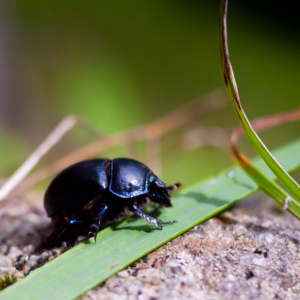
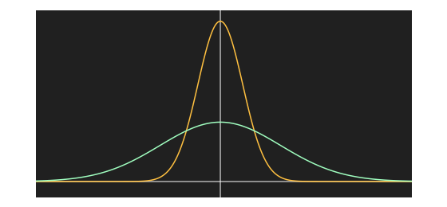

GaussianBlur QML Type
Applies a higher quality blur effect. More...
| Import Statement: | import Qt5Compat.GraphicalEffects |
| Since: | QtGraphicalEffects 1.0 |
| Inherits: |
Properties
- cached : bool
- deviation : real
- radius : real
- samples : int
- source : variant
- transparentBorder : bool
Detailed Description
GaussianBlur effect softens the image by blurring it with an algorithm that uses the Gaussian function to calculate the effect. The effect produces higher quality than FastBlur, but is slower to render.
In particular, modifying properties of Gaussian blur will in many cases require rebuilding the shader code from scratch, so animating properties of the effect may perform badly as well as require a large amount of cache space. Therefore, FastBlur should usually be preferred for animated blurs.
| Source | Effect applied |
|---|---|
 |
Note: This effect is available when running with OpenGL.
Example
The following example shows how to apply the effect.
import QtQuick import QtGraphicalEffects Item { width: 300 height: 300 Image { id: bug source: "images/bug.jpg" sourceSize: Qt.size(parent.width, parent.height) smooth: true visible: false } GaussianBlur { anchors.fill: bug source: bug radius: 8 samples: 16 } }
Performing blur live is a costly operation. Fullscreen gaussian blur with even a moderate number of samples will only run at 60 fps on highend graphics hardware.
Property Documentation
cached : bool |
This property allows the effect output pixels to be cached in order to improve the rendering performance. Every time the source or effect properties are changed, the pixels in the cache must be updated. Memory consumption is increased, because an extra buffer of memory is required for storing the effect output.
It is recommended to disable the cache when the source or the effect properties are animated.
By default, the property is set to false.
deviation : real |
This property is a parameter to the gaussian function that is used when calculating neighboring pixel weights for the blurring. A larger deviation causes image to appear more blurry, but it also reduces the quality of the blur. A very large deviation value causes the effect to look a bit similar to what, for exmple, a box blur algorithm produces. A too small deviation values makes the effect insignificant for the pixels near the radius.

The image above shows the Gaussian function with two different deviation values, yellow (1) and cyan (2.7). The y-axis shows the weights, the x-axis shows the pixel distance.
The value ranges from 0.0 (no deviation) to inf (maximum deviation). By default, devaition is binded to radius. When radius increases, deviation is automatically increased linearly. With the radius value of 8, the deviation default value becomes approximately 2.7034. This value produces a compromise between the blur quality and overall blurriness.
radius : real |
This property defines the distance of the neighboring pixels which affect the blurring of an individual pixel. A larger radius increases the blur effect.
The ideal blur is achieved by selecting samples and radius such that samples = 1 + radius * 2, such as:
| Radius | Samples |
|---|---|
| 0 (no blur) | 1 |
| 1 | 3 |
| 2 | 5 |
| 3 | 7 |
The value ranges from 0.0 (no blur) to inf. By default, the property is set to floor(samples / 2.0).
samples : int |
This property defines how many samples are taken per pixel when blur calculation is done. Larger value produces better quality, but is slower to render.
Ideally, this value should be twice as large as the highest required radius value plus 1, for example, if the radius is animated between 0.0 and 4.0, samples should be set to 9.
By default, the property is set to 9.
Note: This property is not intended to be animated. Changing this property may cause the underlying OpenGL shaders to be recompiled.
source : variant |
This property defines the source item that is going to be blurred.
Note: It is not supported to let the effect include itself, for instance by setting source to the effect's parent.
transparentBorder : bool |
This property defines the blur behavior near the edges of the item, where the pixel blurring is affected by the pixels outside the source edges.
If the property is set to true, the pixels outside the source are interpreted to be transparent, which is similar to OpenGL clamp-to-border extension. The blur is expanded slightly outside the effect item area.
If the property is set to false, the pixels outside the source are interpreted to contain the same color as the pixels at the edge of the item, which is similar to OpenGL clamp-to-edge behavior. The blur does not expand outside the effect item area.
By default, the property is set to false.